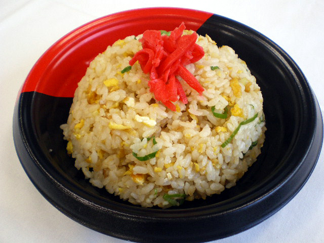

Egg fried rice has been stated to have began in ancient China as a method to accomodate leftovers with the fried rice being paired up with vegetables,meat and egg. These leftovers would be fried and seasoned with various different spices to create the delicious and cheap meal. 
STEP 1 Cook the rice following pack instructions, then drain, spread it out to steam-dry and set aside.
STEP 2 Heat 2 tbsp of the oil in a large wok over a high heat, then add the onion and fry until lightly browned, around 5 mins. Add the rice, stir and toast for about 3 mins, then move to the side of the pan.
STEP 3 Add the remaining oil, then tip in the egg mixture. Leave to cook a little, then mix in with the rice – stir vigorously to coat the grains or, if you prefer the egg chunkier, allow to set for a little longer before breaking up and stirring through. Tip into a serving bowl and scatter over the spring onion to serve. You can also add sesame oil, ground white pepper and a splash of soy sauce to season.